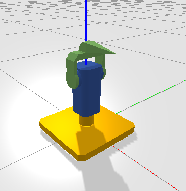
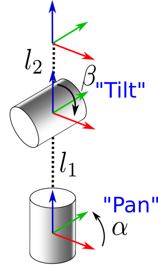
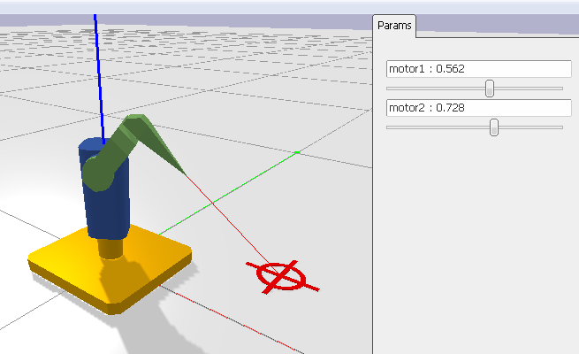

Apprendre la géométrie d’un Pan-Tilt

Dans ce TP, nous allons apprendre le modèle géométrique inverse d’un pan-tilt.
0. Prise en main
Tout d’abord, téléchargez l’archive ci-dessous et décompressez-la:
Téléchargez l’archive pan_tilt.zip
Lisez les instructions ci-dessous
Installez les dépendances:
pip install numpy pygame pybullet onshape-to-robot transforms3d scipyLancez:
python sim.pyEt observez le résultat.
1. Modèle géométrique direct
Le modèle du pan-tilt est le suivant:

\[l_1 = 195 \space mm, l_2 = 82.5 \space mm\]
Dans model.py, implémentez la méthode direct, qui prend en entrée les deux angles du robot, et produit la matrice de transformation \({}^w T_e\) 4x4 allant de l’effecteur au monde.
Pour tester, lancez le programme de cette façon:
python sim.py -m direct2. Intersection avec le sol
Implémentez maintenant la méthode laser, qui calcule l’intersection au sol (\(z=0\)) d’un laser qui partirait de l’axe x de l’effecteur.
Pour tester, lancez le programme de cette façon:
python sim.py -m laserVoici le résultat que vous devriez obtenir:

3. Apprentissage de la géométrie inverse
Dans cette partie, l’objectif est d’apprendre au laser à viser un point cible. Pour cela, nous allons utiliser la fonction laser créée précédemment, et essayer d’apprendre l’inverse de cette fonction à l’aide d’un réseau de neurones.
3.1 Perceptron multi-couches
Exécutez learn_example.py, lisez son code ainsi que celui de mlp.py et répondez aux quesitons suivantes.
Combien de couches cachées y’a-t-il dans ce réseau ?
Combien de paramètres entraînables y’a-t-il dans ce réseau ?
Dans la ligne net = MLP(1, 1), que signifient les deux arguments 1 et 1 ?
Quelle fonction de perte est utilisée ?
3.2 Entraînement
En vous inspirant de learn_example, créez un fichier learn.py dans lequel:
Créez un perceptron multi-couche, prenant 2 entrées \((x, y)\) et produisant 2 sorties \((\alpha, \beta)\).
Pour chaque époque (1000 au total):
- Génère
batch_sizeangles \((\alpha, \beta)\), et calcule la position du laser à l’aide de la fonctionlaser.
- Calculez la perte entre la position prédite et la position cible, puis effectuez une rétropropagation pour mettre à jour les poids du réseau.
Enfin, sauvez les poids du réseau à la fin de l’entraînement.
3.3 Inférence
Dans model.py, implémentez la méthode inverse_nn. Elle prend en argument une cible et retourne les angles qui doivent permettre au pan-tilt de la regarder. Pour cela, il suffit de charger les poids du réseau que vous avez entraîné précédemment, et d’effectuer une inférence.
Vous testerez votre code de la même façon que précédemment:
python sim.py -m inverse_nn3.4 Courbe d’apprentissage
Modifiez le code d’entraînement pour afficher la courbe d’apprentissage, c’est à dire la perte en fonction du nombre d’époques.
3.5 Une amélioration
Remarquez ce qu’il se passe lorsque votre pan-tilt regarde derrière lui, c’est à dire en \(x<0\) et \(y=0\). Le problème ici vient de la difficulté pour le réseau d’apprendre à cause de la discontinuité des angles.
Lors de l’apprentissage, remplacez les angles \(\alpha\) et \(\beta\) par leurs sinus et cosinus. Par exemple, au lieu d’apprendre à prédire \(\alpha\), vous apprendrez à prédire \(\sin(\alpha)\) et \(\cos(\alpha)\). De cette façon, le réseau n’aura plus de discontinuité à apprendre.
Lors de l’inférence, vous devrez faire le calcul inverse pour retrouver les angles à partir de leurs sinus et cosinus. Par exemple, \(\alpha = \arctan2(\sin(\alpha), \cos(\alpha))\).
4 Modèle inverse analytique
Implémentez la méthode inverse dans model.py, qui calcule l’inverse de la fonction laser de manière analytique, c’est à dire sans apprentissage.
Vous testerez votre code de la même façon que précédemment:
python sim.py -m inverse